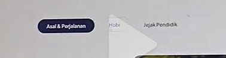

Tentang Saya
Perjalanan seorang calon pendidik yang lahir dari keyakinan bahwa setiap peserta didik menyimpan potensi luar biasa yang menunggu untuk ditemukan.

| Nama Lengkap | Kartika Wulandari, S.Sos |
| Program | PPG (Pendidikan Profesi Guru) 2026 |
| Universitas | Universitas Pancasakti Tegal |
| Asal Daerah | Kabupaten Cilacap, Jawa Tengah |
| Latar Belakang | S1 Bimbingan & Konseling Islam |
🏡 Kabupaten Cilacap, Jawa Tengah
Kabupaten Cilacap merupakan kabupaten terluas di Jawa Tengah yang memiliki keunikan tersendiri karena berbatasan langsung dengan Samudra Hindia di sebelah selatan, menjadikannya satu-satunya kabupaten di Jawa Tengah yang memiliki pantai menghadap samudra lepas. Wilayah ini juga dikenal sebagai daerah strategis karena memiliki Kilang Minyak Pertamina terbesar di Indonesia, sehingga menjadi salah satu penyangga energi nasional.
Selain itu, Cilacap memiliki Pulau Nusakambangan yang terkenal dengan keindahan alamnya yang masih sangat terjaga, serta tradisi Sedekah Laut yang rutin digelar setiap tahun sebagai bentuk rasa syukur masyarakat nelayan atas hasil laut yang melimpah.
Terlahir dan tumbuh di Cilacap dengan segala kekayaan alam dan budayanya, saya merasa memiliki tanggung jawab besar sebagai pendidik masa depan. Keberagaman potensi daerah ini mengajarkan saya untuk berpikir luas, adaptif, dan peka terhadap kebutuhan peserta didik. Sebagaimana samudra yang luas, saya ingin menjadi pendidik yang mampu menginspirasi dan mengantarkan setiap peserta didik untuk mengenali potensi diri serta berkontribusi nyata bagi masyarakat.

📍 Kabupaten Cilacap, Jawa Tengah
Hobi-hobi ini bukan sekadar pengisi waktu luang — bagi saya, setiap aktivitas kreatif adalah cara untuk terus belajar dan menemukan inspirasi baru yang kelak bisa saya bawa ke dalam kelas.
Keinginan saya untuk menjadi guru berawal dari kedua orang tua saya yang juga berprofesi sebagai guru. Dari merekalah saya memahami bahwa menjadi guru bukan sekadar pekerjaan, melainkan sebuah panggilan jiwa yang mulia. Terinspirasi dari mereka, saya bertekad menjadi pendidik yang tidak hanya menguasai materi, tetapi juga mampu menyentuh hati dan menumbuhkan semangat belajar setiap peserta didik.
Tujuan saya menjadi guru adalah untuk berkontribusi dalam membentuk generasi yang cerdas, berkarakter, dan percaya diri. Saya ingin menjadi sosok pendidik yang mampu menciptakan ruang belajar yang aman dan bermakna, di mana setiap peserta didik merasa dihargai dan didukung untuk berkembang sesuai potensinya. Melalui profesi ini, saya berharap dapat memberikan dampak positif yang berkelanjutan, bukan hanya bagi peserta didik, tetapi juga bagi keluarga dan masyarakat sekitarnya.
"Guru terbaik bukan yang paling banyak bicara di depan kelas — melainkan yang paling banyak meninggalkan keberanian, kepercayaan diri, dan harapan di dalam dada peserta didiknya."
📍 Lokasi Kampus — Universitas Pancasakti Tegal
🏛️ Universitas Pancasakti Tegal
📮 Jl. Halmahera Km 1, Tegal, Jawa Tengah
"Guru terbaik bukan yang paling banyak bicara di depan kelas — melainkan yang paling banyak meninggalkan keberanian, kepercayaan diri, dan harapan di dalam dada peserta didiknya."— Prinsip Hidup, Kartika Wulandari, S.Sos